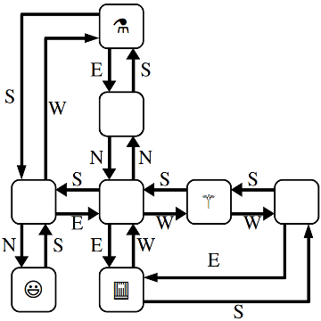
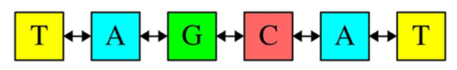
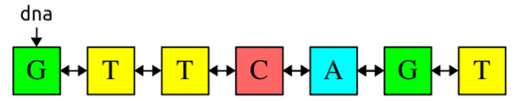
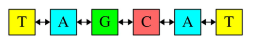
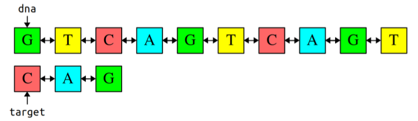
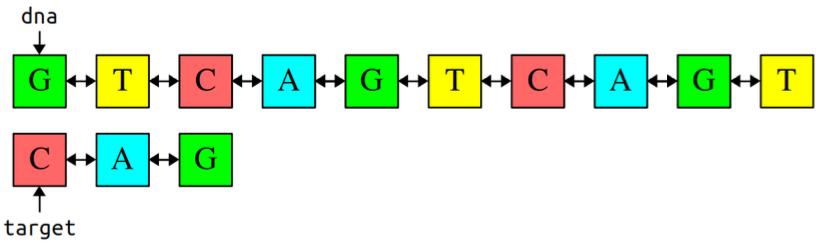
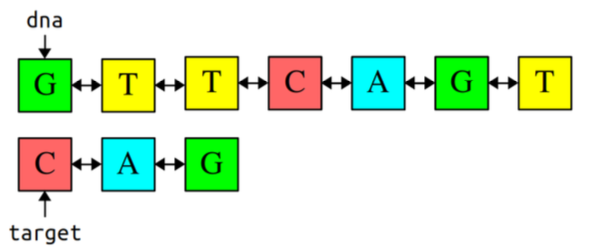
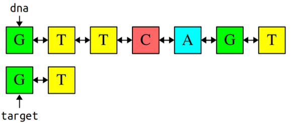
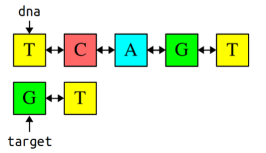

Due Friday, March 4 at 10:30 am
- Submissions received by the due date receive a small on-time bonus.
- All students are granted a pre-approved extension or "grace period" of 24 hours after the due date. Late submissions are accepted during the grace period with no penalty.
- The grace period expires Sat, Mar 5 at 10:30 am, after which we cannot accept further late submissions.
- All due dates and submission times are expressed in Pacific time.
You are permitted to work on this assignment in pairs.
Linked structures are a fundamentally different way of encoding sequences than the array-based approaches you worked with on Assignment 6 and Assignment 7. This assignment is all about manipulating, traversing, and exploring linked structures. It’s a two-parter. The first part is a hybrid coding/debugging exercise where you’ll work the debugger to escape from a maze. The second part is a coding exercise in which you’ll use linked lists to manipulate DNA sequences.
You know the drill – make consistent, slow, steady progress on this assignment rather than doing everything at the last minute. Here’s our recommended timeline:
- Aim to complete The Labyrinth! within two days of this assignment going out.
- Aim to complete Splicing and Dicing within seven days of this assignment going out.
Assignment Logistics
Starter Files
We provide a ZIP of the starter project. Download the zip, extract the files, and double-click the .pro file to open the project in Qt Creator.
Getting Help
Keep an eye on the Ed forum for an announcement of the Assignment 8 YEAH (YEAH = Your Early Assignment Help) group session where our veteran section leaders will answer your questions and share pro tips. We know it can be daunting to sit down and break the barrier of starting on a substantial programming assignment – come to YEAH for advice and confidence to get you on your way!
We also here to help if you get run into issues along the way! The Ed forum is open 24/7 for general discussion about the assignment, lecture topics, the C++ language, using Qt, and more. Always start by searching first to see if your question has already been asked and answered before making a new post.
To troubleshoot a problem with your specific code, your best bet is to bring it to the LaIR helper hours or office hours.
Part One: The Labyrinth!
You have been trapped in a labyrinth, and your only hope to escape is to cast the magic spell that will free you from its walls. To do so, you will need to explore the labyrinth to find three magical items:
- The Spellbook (📕), which contains the spell you need to cast to escape.
- The Potion (⚗), containing the arcane compounds that power the spell.
- The Wand (⚚), which concentrates your focus to make the spell work.
Once you have all three items, you can cast the spell to escape to safety.
This is, of course, no ordinary maze. It’s a pointer maze. The maze consists of a collection of objects of type MazeCell, where MazeCell is defined here:
struct MazeCell {
Item whatsHere; // Item present, if any.
MazeCell* north; // The cell north of us, or nullptr if we can't go north.
MazeCell* south;
MazeCell* east;
MazeCell* west;
};
Here, Item is this enumerated type:
enum class Item {
NOTHING, SPELLBOOK, POTION, WAND
};
For example, here is a 4 × 4 labyrinth.
![4 x 4 grid of cells, where some cells are connected by double-headed arrow pointers. The third cell in the top row has a wand in it, the first cell in the third row has a spellbook in it, the third cell in the third row has a smiley face in it (that's you!), and the fourth cell in the fourth row has a potion in it. The cell with the book is connected via a double-headed arrow only to the cell below it. The cell you (smiley face) are in has 4 pointers on each face of the cell, to cells above, below, left, and right.](img/labyrinth.png)
We’ve marked your starting position with a smiley face and the positions of of the three items with similarly cute emojis. The MazeCell you begin at would have its north, south, east, and west pointers pointing at the MazeCell objects located one step in each of those directions from you. On the other hand, the MazeCell containing the book would have its north, east, and west pointers set to nullptr, and only its south pointer would point somewhere (specifically, to the cell in the bottom-left corner).
Each MazeCell has a variable named whatsHere that indicates what item, if any, is at that position. Empty cells will have whatsHere set to the Item::NOTHING. The cells containing the Spellbook, Potion, or Wand will have those fields set to Item::SPELLBOOK, Item::POTION, or Item::WAND, respectively.
If you were to find yourself in this labyrinth, you could walk around a bit to find the items you need to cast the escape spell. There are many paths you can take; here’s three of them:
ESNWWNNEWSSESWWN
SWWNSEENWNNEWSSEES
WNNEWSSESWWNSEENES
Each path is represented as a sequence of letters (N for north, W for west, etc.) that, when followed from left to right, trace out the directions you’d follow. For example, the first sequence represents going east, then south (getting the Potion), then north, then west, etc. Trace though those paths and make sure you see how they pick up all three items.
There are three milestones to this problem. The first one is a coding problem, and the second two are debugger exercises. We strongly recommend completing them in the order in which they appear, as they build on top of one another.
Milestone One: Check Paths to Freedom
Your first task is to write a function that, given your starting position in the maze and a path, checks whether that path is legal and picks up all three items. Specifically, in the file Labyrinth.cpp, implement the function
bool isPathToFreedom(MazeCell* startLocation, const string& path);
This function takes as input your starting location in the maze and a string made purely from the characters 'N', 'S', 'E', and 'W', then returns whether that path lets you escape from the maze.
A path lets you escape the maze if (1) the path is legal, in the sense that it never takes a step that isn’t permitted in the current MazeCell, and (2) the path picks up the Spellbook, Wand, and Potion. The order in which those items are picked up is irrelevant, and it’s okay if the path continues onward after picking all the items up.
You can assume that startLocation is not a null pointer (you do indeed begin somewhere) and that the input string does not contain any characters besides 'N', 'S', 'E', and 'W' and do not need to handle the case where this isn’t true.
To summarize, here’s what you need to do.
- Implement the
isPathToFreedomfunction inLabyrinth.cpp. - Test your code thoroughly using our provided tests. (If you’d like to write tests of your own, you’re welcome to do so, though it’s not required here.)
Some notes on this problem:
-
Your code should work for a
MazeCellfrom any possible maze, not just the one shown on the previous page. -
Although in the previous picture the maze was structured so that if there was a link from one cell to another going north there would always be a link from the second cell back to the first going south (and the same for east/west links), you should not assume this is the case in this function. Then again, chances are you wouldn’t need to assume this.
-
A path might visit the same location multiple times, including possibly visiting locations with items in them multiple times.
-
You shouldn’t need to allocate any new
MazeCellobjects in the course of solving this problem. Feel free to declare variables of typeMazeCell*, but don’t use thenewkeyword. After all, your job is to check a path in an existing maze, not to make a new maze. -
Feel free to implement this function either iteratively or recursively, whichever seems best to you. You don’t need to worry about stack overflows here; we’ll never run your code on anything large enough to run out of stack space.
-
Your code should not modify the maze passed into the function. In particular, you should not change which items appear where or where the links point.
-
An edge case you should handle: it is okay to find the three items and then continue to walk around the maze. However, if the path both (1) finds all three items and (2) tries making an illegal step, then your function should return false.
Milestone Two: Escape from Your Personal Labyrinth
Your next task is to escape from a labyrinth that’s specifically constructed for you (and your partner, if you’re working in a pair). The starter code we’ve provided will use your name(s) to build you a personalized labyrinth. By “personalized,” we mean “no one else in the course is going to have the exact same labyrinth as you.” Your job is to figure out a path through that labyrinth that picks up all the three items, allowing you to escape.
Open the file LabyrinthEscape.cpp and you’ll see three constants. The first one, MyName, is a spot for your name (or your name and your partner’s name, if you’re working in a pair). Right now, it’s marked with a TODO message. Edit this constant so that it contains your name(s).
Scroll down to the first test case in LabyrinthEscape.cpp. This test case generates a personalized labyrinth based on the MyName constant and returns a pointer to one of the cells in that maze. It then checks whether the constant ThePathOutOfMyMaze is a sequence that will let you escape from the maze. Right now, ThePathOutOfMyMaze is a TODO message, so it’s not going to let you escape from the labyrinth. You’ll need to edit this string with the escape sequence once you find it.
To come up with a path out of the labyrinth, use the debugger! Set a breakpoint at the indicated line in the first test case. Launch the demo app with the debugger enabled. When you do, you should see the local variables window pop up, along with the contents of startLocation, which is the MazeCell where we’ve dropped you into the labyrinth. Clicking the dropdown triangle in the debugger window will let you read the contents of the whatsHere field of startLocation (it’ll be Item::NOTHING), as well as the four pointers leading out of the cell.
Depending on your maze, you may find yourself in a position where you can move in all four cardinal directions, or you may find that you can only move in some of them. The pointers in directions you can’t go are all equal to nullptr, which will show up as 0x0 in the debugger window. The pointers that indicate directions you can go will all have dropdown arrows near them. Clicking one of these arrows will show you the MazeCells reachable by moving in the indicated directions. You can navigate the maze further by choosing one of those dropdown arrows, or you could back up to the starting maze cell and explore in other directions. It’s really up to you!
Draw a lot of pictures. Grab a sheet of paper and map out the maze you’re in. There’s no guarantee where you begin in the maze – you could be in the upper-left corner, dead center, etc. The items are scattered randomly, and you’ll need to seek them out. Once you’ve mapped out the maze, construct an escape sequence and stash it in the constant ThePathOutOfMyMaze, then see if you pass the first test. If so, fantastic! You’ve escaped! If not, you have lots of options. You could step through your isPathToFreedom function to see if one of the letters you entered isn’t what you intended and accidentally tries to move in an illegal direction. Or perhaps the issue is that you misdrew your map and you’ve ended up somewhere without all the items. You could alternatively set the breakpoint at the test case again and walk through things a second time, seeing whether the picture of the maze you drew was incorrect.
To summarize, here’s what you need to do:
-
Edit the constant
MyNameat the top ofLabyrinthEscape.cppwith a string containing your name and your partner’s name if you’re working in a group. Don’t skip this step! If you forget to do this, you’ll be solving the wrong maze! -
Set a breakpoint at the indicated line in the first test case in
LabyrinthEscape.cpp, run the program in debug mode, and choose “Run Tests” to activate the breakpoint. -
Map out the maze on a sheet of paper and find where all the items are. Once you’re done, stop the running program.
-
Find a path that picks up all three items and edit the constant
ThePathOutOfMyMazeat the top ofLabyrinthEscape.cppwith that path. Run the test a second time with the debugger turned off to confirm you’ve escaped.
Milestone Three: Escape from Your Personal Twisty Labyrinth
Now, let’s make things a bit more interesting. In the previous section, you escaped from a labyrinth that nicely obeyed the laws of geometry. The locations you visited formed a nice grid, any time you went north you could then go back south, etc.
In this section, we’re going to relax these constraints, and you’ll need to find your way out of trickier mazes that look like this one:

This maze is stranger than the previous one you explored. For example, you’ll notice that these MazeCells are no longer in a nice rectangular grid where directions of motion correspond to the natural cardinal directions. There’s a MazeCell here where moving north and then north again will take you back where you started. In one spot, if you move west, you have to move south to return to where you used to be. In that sense, the names “north,” “south,” “east,” and “west” here no longer have any nice geometric meaning; they’re just the names of four possible exits from one MazeCell into another.
The one guarantee you do have is that if you move from one MazeCell to a second, there will always be a direct link from the second cell back to the first. It just might be along a direction of travel that has no relation to any of the directions you’ve taken so far.
The second test case in LabyrinthEscape.cpp contains code that generates a twisty labyrinth personalized with the MyName constant. As before, you’ll need to find a sequence of steps that will let you collect the three items you need to escape.
In many regards, the way to complete this section is similar to the way to complete the previous one. Set a breakpoint in the indicated spot in the second test case and use the debugger to explore the maze. Unlike the previous section, though, in this case you can’t rely on your intuition for what the geometry of the maze will look like. For example, suppose your starting location allows you to go north. You might find yourself in a cell where you can then move either east or west. One of those directions will take you back where you started, but how would you know which one?
This is where memory addresses come in. Internally, each object in C++ has a memory address associated with it. Memory addresses typically are written out in the form @0xsomething, where something is the address of the object. You can think of memory addresses as sort of being like an “ID number” for an object – each object has a unique address, with no two objects having the same address. When you pull up the debugger view of a maze cell, you should see the MazeCell memory address under the Value column.
For example, suppose that you’re in a maze and your starting location has address 0x7fffc8003740 (the actual number you see will vary based on your OS), and you can move to the south (which ways you can go are personalized to you based on your name, so you may have some other direction to move). If you expand out the dropdown for the south pointer, you’ll find yourself at some other MazeCell. One of the links out of that cell takes you back where you’ve started, and it’ll be labeled 0x7fffc8003740. Moving in that direction might not be productive – it just takes you back where you came from – so you’d probably want to explore other directions to search the maze.
It’s going to be hard to escape from your maze unless you draw lots of pictures to map out your surroundings. To trace out the maze that you’ll be exploring, we recommend diagramming it on a sheet of paper as follows. For each MazeCell, draw a circle labeled with the memory address, or, at least the last five characters of that memory address. (Usually, that’s sufficient to identify which object you’re looking at). As you explore, add arrows between those circles labeled with which direction those arrows correspond to. What you have should look like the picture above, except that each circle will be annotated with a memory address. It’ll take some time and patience, but with not too much effort you should be able to scout out the full maze. Then, as before, find an escape sequence from the maze!
To recap, here's what you need to do:
-
Set a breakpoint at the indicated line in the second test case in
LabyrinthEscape.cpp, run the demo app in debug mode and choose “Run Tests” to activate the breakpoint. -
Map out the twisty maze on a sheet of paper and find where all the items are and how the cells link to each other. Once you’re done, stop the running program.
-
Find an escape sequence, and edit the constant
ThePathOutOfMyTwistyMazeat the top ofLabyrinthEscape.cppwith that constant. Run the tests again – this time without the breakpoint – and see if you’ve managed to escape!
Some notes on this problem:
-
The memory addresses of objects are not guaranteed to be consistent across runs of the program. This means that if you map out your maze, stop the running program, and then start the program back up again, you are not guaranteed that the addresses of the
MazeCells in the maze will be the same. The shape of the maze is guaranteed to be the same, though. If you do close your program and then need to explore the maze again, you may need to relabel your circles as you go, but you won’t be drawing a different set of circles or changing where the arrows link. -
You are guaranteed that if you follow a link from one
MazeCellto another, there will always be a link from that secondMazeCellback to the first, though the particular directions of those links might be completely arbitrary. That is, you’ll never get “trapped” somewhere where you can move one direction but not back where you started. -
Attention to detail is key here – different
MazeCellobjects will always have different addresses, but those addresses might be really similar to one another. Make sure that as you’re drawing out your diagram of the maze, you don’t include duplicate copies of the sameMazeCell. -
The maze you’re exploring might contain loops or cases where there are multiple distinct paths between different locations. Keep this in mind as you’re exploring or you might find yourself going in circles!
-
Remember that you don’t necessarily need to map out the whole maze. You only need to explore enough of it to find the three items and form a path that picks all of them up.
At this point, you have a solid command of how to use the debugger to analyze linked structures. You know how to recognize a null pointer, how to manually follow links between objects, and how to reconstruct the full shape of the linked structure even when there’s bizarre and unpredicable cross-links between them. We hope you find these skills useful as you continue to write code that works on linked lists and other linked structures!
Part Two: Splicing and Dicing
DNA strands are made up of smaller units called nucleotides. There are four different nucleotides present in DNA, which are represented by the letters A, C, G, and T. Any DNA strand, therefore, can be thought of as linked structure consisting of the nucleotides that make up that strand, in order. In software, we might represent a nucleotide as a doubly-linked list made of individual units that look like this:
struct Nucleotide {
char value; // 'A', 'C', 'G', or 'T'
Nucleotide* next;
Nucleotide* prev;
};
For example, the DNA sequence TAGCAT would be represented as follows:

Although they aren’t pictured here, the prev pointer of the first T and the next pointer of the last T would each be set to nullptr. For visual simplicity, we’re going to leave those pointers out of future pictures as well, but it doesn’t hurt to draw them in!
There are four milestones in this part of the assignment, and they’re spelled out over the next pages.
Milestone One: Implement Core Functions
Your first task is to write functions for manipulating existing DNA sequences. First, write a function
void deleteNucleotides(Nucleotide* dna);
that takes as input a pointer to a DNA strand, then deletes all the memory used by the nucleotides in that strand. It’s possible that the input pointer is nullptr if the DNA strand is empty, in which case this function should do nothing.
Next, write this function:
string fromDNA(Nucleotide* dna);
This function takes as input a sequence of nucleotides, then returns a string representation of the DNA strand. For example, calling fromDNA on the dna pointer shown below would return "GTTCAGT":

With that in mind, here’s your first milestone:
Milestone 1: Implement Core Functions
-
Add at two custom test cases to
SplicingAndDicing.cpp, one for each of the functions mentioned above. -
Implement the
deleteNucleotidesfunction and test it thoroughly. -
Implement the
fromDNAfunction and test it thoroughly.
Some notes on this problem:
-
Draw pictures! Get out a pencil and paper and trace out what operations you want to perform on your linked lists before you write any code. Then, as you’re writing up the code, refer back to your pictures to make sure each line of code does what you want it to do.
-
These functions must not be implemented recursively. We’re going to run some large DNA strands through your code, and you won’t have enough stack space to proceed recursively.
-
You must not use any of the container types (e.g.
Vector,Set, etc.) in the your solutions. See if you can do this purely using linked lists. -
If you leave a pointer uninitialized in C++, it does not default to
nullptrand instead points somewhere random. Using a pointer like this will almost certainly crash your program immediately. It’s a good idea to explicitly set pointers you don’t want pointing at anything tonullptr. -
Your implementations of these functions should run in time O(n). If you’re able to pass the provided stress tests, with each one taking at most a few seconds, you should be in good shape.
-
You can assume these functions always take in a pointer to the first nucleotide in the strand (or
nullptrif the strand is empty). You don’t need to handle pointers into the middle of lists. -
You should not allocate any memory with new in the course of implementing these functions, since you’re not actually creating any new nucleotides. Feel free to declare variables of type
Nucleotide*(remember that creating a pointer is separate from requesting space using the new operator), but don’t use thenewoperator.
Milestone Two: Construct New Sequences
Your next task is to write a function
Nucleotide* toStrand(const string& dna);
This function takes in a string representing a DNA strand and returns a chain of Nucleotides encoding that DNA strand. You can think of it as the inverse of the fromDNA function: fromDNA takes in a Nucleotide* and returns a string, while toStrand takes in a string and returns a Nucleotide*.
For example, calling toStrand("TAGCAT") should return the a pointer to the first nucleotide in the DNA strand shown below:

Here’s what you need to do:
Milestone 2: Construct New Sequences
-
Add a custom test case to
SplicingAndDicing.cppto test thetoStrandfunction. -
Implement
toStrandand test it thoroughly.
Some notes on this problem:
-
Draw pictures! Get out a pencil and paper and trace out what operations you want to perform on your linked lists before you write any code. Then, as you’re writing up the code, refer back to your pictures to make sure each line of code does what you want it to do.
-
These functions must not be implemented recursively. We’re going to run some large DNA strands through your code, and you won’t have enough stack space to proceed recursively.
-
You must not use any of the container types (e.g.
Vector,Set, etc.) in the your solutions. See if you can do this purely using linked lists. -
Remember that the linked list you produce should be a doubly-linked list. This will require you to do some extra wiring in your
toStrandfunction. -
Don’t be afraid to set breakpoints in test cases and pull up the debugger if you need to figure out where a crash comes from or why your code isn’t working. After working through the labyrinth exercises, you should have all the tools you need to reconstruct the state of memory on a sheet of paper. More generally, we recommend that you never run your program using the regular “run” button and always run with the debugger turned on so that if anything bad happens, you can poke around and see where things went wrong.
-
Your implementation of this function should run in time O(n). If you’re able to pass the provided stress tests, with each one taking at most a few seconds, you should be in good shape.
-
Although we’re writing this code in the context of DNA sequences where each character is one of
'A','C','G', or'T', your code should be general enough to work on strings containing other characters.
Milestone Three: Implement Searching
Your next task is to implement a function
Nucleotide* findFirst(Nucleotide* dna, Nucleotide* target);
that searches for a copy of the strand given by target inside the strand given by dna, then returns a pointer to the first cell in the match. For example, given these DNA strands, findFirst should return a pointer to the third nucleotide in the dna list.

(As before, we aren’t drawing the null pointers that appear as the next and prev pointers of the first and last elements of the DNA strands.)
If the sequence given by target doesn’t appear in dna, this function should return nullptr to indicate that the sequence wasn’t found.
Here’s the requirements for this milestone:
Milestone 3: Implement Searching
-
Add at least one custom test case to
SplicingAndDicing.cppforfindFirst. -
Implement the
findFirstfunction and test it thoroughly.
Some notes on this problem:
-
You must not use the
stringtype in your implementation. Write this one purely using linked lists. -
Draw pictures! Get out a pencil and paper and trace out what operations you want to perform on your linked lists before you write any code. Then, as you’re writing up the code, refer back to your pictures to make sure each line of code does what you want it to do.
-
You must not use any of the container types (e.g.
Vector,Set, etc.) in the course of solving this problem. See if you can do this purely using linked lists. -
The
targetsequence could be empty, in which case this function should report that target appears at the start ofdna. This is similar to what you’d do if you wanted to search for the empty string inside of another string: it always exists, and it’s always at the front. -
You can assume the
Nucleotideobjects that make up the target sequence are different objects than theNucleotideobjects that make updna. That is, the target pointer doesn’t point into the middle ofdna. More generally, you can assume the pointers passed into this function always point at the start of the lists in question. -
You should not allocate any memory with
newin the course of implementingfindFirst, since you’re not actually creating any new nucleotides. Feel free to declare variables of typeNucleotide*(remember that creating a pointer is separate from using thenewkeyword), but don’t use thenewoperator. -
Your code should be efficient enough to pass the test cases that we’ve bundled with the starter files, but aside from that we won’t set any specific big-O target runtime.
-
Although we’re writing this code in the context of DNA sequences where each character is one of
'A', 'C', 'G', or 'T', your code should be general enough to work on strings containing other characters.
Milestone Four: Implement Splicing
Your last task is to write a function
bool spliceFirst(Nucleotide*& dna, Nucleotide* target);
that takes as input two DNA strands. The first strand, dna, is the DNA sequence to search. The second strand, target, is a specific sequence to chop out of the DNA strand. Your function should then find the first copy of target inside of dna, then edit the dna strand by removing that sequence in its entirety. If that sequence doesn’t exist, this function should return false to indicate that nothing was removed.
For example, suppose we have these strands:

As before, we aren’t drawing the null pointers that appear as the next and prev pointers of the first and last elements of the DNA strands. Calling spliceFirst(dna, target) would give this result:

The first copy of "CAG" was deleted from dna, though the second copy of "CAG" still exists; spliceFirst only removes the first copy of target. On the other hand, suppose we have these sequences:

Calling spliceFirst(dna, target) would result in the following:

Notice that dna has changed to point later in the sequence, since we deleted the beginning of the strand. Given this, here’s your next milestone:
Given this, here’s your next milestone:
-
Add at least one custom test for the
spliceFirstfunction. -
Implement the
spliceFirstfunction and test it thoroughly.
Some notes on this problem:
-
You must not use the
stringtype in your implementation. Write this one purely using linked lists. -
Draw pictures! Get out a pencil and paper and trace out what operations you want to perform on your linked lists before you write any code. Then, as you’re writing up the code, refer back to your pictures to make sure each line of code does what you want it to do.
-
You must not use any of the container types (e.g.
Vector,Set, etc.) in the course of solving this problem. See if you can do this purely using linked lists. -
You must not use the string type in your implementation. Write this one purely using linked lists.
-
As before, you should not implement this function recursively because we might be running huge DNA sequences through it and you won’t have the stack space to pull this off.
-
Your function should leave the original strand unchanged except for the removed section and possibly the
Nucleotidesthat appear just before and just after that section. In other words, you should only make local modifications to the strand rather than, say, allocating a new strand or changing which characters are stored in whichNucleotideobjects. -
You can assume that
Nucleotideobjects that make up the target sequence are different objects than theNucleotideobjects that make updna. That is, the target pointer doesn’t point into the middle ofdna. -
Your implementation of
spliceFirstshould not leak any memory. In particular, if you remove any nucleotides from the DNA strand, you should be sure to delete them. -
You may have noticed that the
dnaparameter is passed by reference (i.e.Nucleotide*&rather thanNucleotide*). This is because you may need to change where thednapointer points; specifically, if you remove the first nucleotide from the strand, you will need to reassigndnato point after the removed sequence. Be careful not to change wherednais pointing unless you’re removing something from the front of the sequence. -
The
targetsequence could be empty, in which case this function should simulate removing nothing from the DNA strand. Specifically, your function should leave the DNA strand unmodified and return true to indicate that, indeed, zero nucleotides were removed from it. -
You should not allocate any memory using
newin the course of implementing spliceFirst, since you’re not actually creating any new nucleotides. Feel free to declare variables of typeNucleotide*(remember that creating a pointer is separate from allocating memory usingnew), but don’t use thenewoperator. -
If, in the course of coding this one up, you start seeing crashes or bugs in
fromDNA,deleteNucleotides, orfindFirst, it could mean either that there’s a bug in yourspliceFirstfunction that caused the list to be wired improperly or that there was a lurking issue in one of those earlier functions that accidentally sneaked past the tests from the earlier milestones. In other words, don’t immediately assume that one of the earlier functions is the culprit; investigatespliceFirstas well to make sure that it didn’t leave the wiring between the nucleotides in a bad state. -
The debugger is your friend! Don’t hesitate to set breakpoints in test cases or step through your code if you find any issues with your program; this is a great way to see what your code is doing. You learned how to sketch out how linked structures look in memory when working through the labyrinth escape, and those same skills will be useful to you here.
-
Your code should be efficient enough to pass the test cases that we’ve bundled with the starter files, but aside from that we won’t set any specific big-O target runtime.
-
Although we’re writing this code in the context of DNA sequences where each character is one of
'A', 'C', 'G', or 'T', your code should be general enough to work on strings containing other characters.
(Optional) Part Three: Extensions
This assignment is all about linked structures, and there’s plenty of room for you to do Fun and Exciting Things with the topics we’ve covered here. Here’s some thoughts to help get you started, but the sky’s the limit here!
-
The Labyrinth!: Our provided code generates random mazes using combinations of several famous algorithms and data structures. (The normal maze is generated using Kruskal’s algorithm and a disjoint-set forest, the twisted maze is generated using an Erdős–Rényi random graph with connectivity guaranteed via breadth-first search, and the starting locations are chosen by a procedure that uses the Floyd-Warshall algorithm as substep.) There are lots of fairly accessible articles online about how to generate random mazes in other ways. For example, you can use a randomized depth-first search to build mazes with lots of long, twisted hallways, or randomized Prim’s algorithm to build mazes that branch out from a central location. Wilson’s algorithm produces mazes that are sampled uniformly at random from the space of all possible mazes. Play around with these and see what you find!
Other things you could consider: could you build a visualizer that draws the maze given a pointer to your starting location? Or could you write a program that automatically finds the shortest paths out of a maze?
-
Splicing and Dicing: DNA often comes in the form of plasmids, in which the DNA links in a ring rather than having a definitive beginning and end. Adapt the functions you wrote earlier to work in the case where the input strands are plasmids in addition to regular DNA strands.
There are a number of algorithms you can use to implement
findFirstin time O(m + n), where m is the length of the DNA strand / plasmid to process and n is the length of the target sequence. (This is as fast as you can make this algorithm – anything shorter than this means that you can’t even read the whole DNA sequence and target, something you’d need to do in the worst case). The Knuth-Morris-Pratt (KMP) algorithm guarantees this worst-case performance. The Rabin-Karp algorithm uses hash functions in a really clever way that gives an average-case performance of O(m + n), though with a worst-case performance of O(mn). Explore these algorithms and see what you find!You’re working on a bunch of routines for manipulating DNA sequences, and there’s plenty of in- teresting work you could do with this. Could you simulate the process by which the Pfizer-BioN- Tech mRNA vaccine was made? Could you simulate how CRISPR-Cas9 works?
Submission Instructions
Before you call it done, run through our submit checklist to be sure all your ts are crossed and is are dotted. Make sure your code follows our style guide. Then upload your completed files to Paperless for grading.
Partner Submissions:
- If you forget to list your partner you can resubmit to add one
- Either person can list the other, and the submissions (both past and future) will be combined
- Partners are listed per-assignment
- You can't change/remove a partner on an individual submission
Please submit only the files you edited; for this assignment, these files will be:
Labyrinth.cpp.LabyrinthEscape.cpp.SplicingAndDicing.cpp.
You don't need to submit any of the other files in the project folder.
If you modified any other files that you modified in the course of coding up your solutions, submit those as well. And that’s it! You’re done!
Good luck, and have fun!